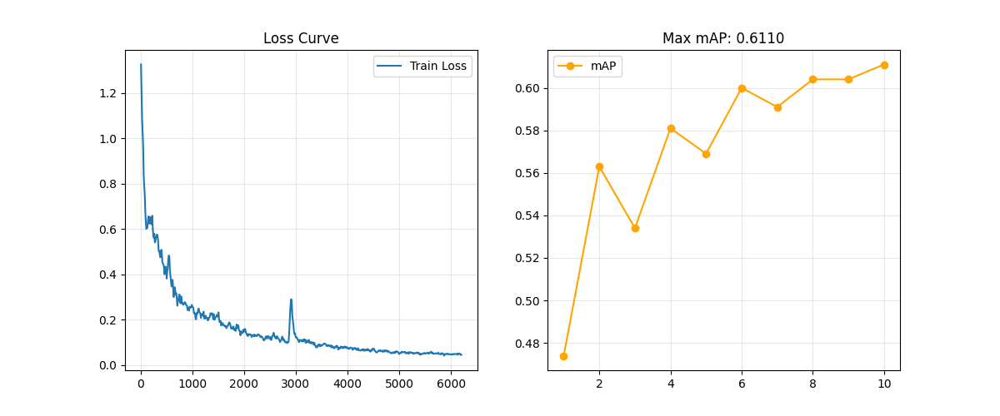

MMDetection 实战：从 ResNet-18 到 ResNet-50，我如何将气球检测精度提升至 61.1% mAP
摘要：本文记录了使用 MMDetection 训练 Balloon 数据集的全过程。通过从 Faster R-CNN R18 切换到 R50，并将训练轮数延长至 200 Epochs，最终实现了 mAP 从 26% 到 61% 的巨大飞跃。文末附详细配置与避坑指南。🎈
1. 项目背景
最近在学习目标检测，选择了经典的 Balloon Dataset (气球数据集) 作为练手项目。
- 初次尝试：使用
Faster R-CNN (ResNet-18)训练了 50 轮，结果强差人意，mAP 只有 0.261，很多气球检测不准。 - 本次改进：决定“大力出奇迹”，更换更深的主干网络 ResNet-50，并将训练轮数直接拉满到 200 轮。
2. 实验环境与配置
- 框架: MMDetection 3.x (OpenMMLab)
- 模型: Faster R-CNN (Backbone: ResNet-50, Neck: FPN)
- 配置文件:
configs/faster_rcnn/faster-rcnn_r50_fpn_1x_coco.py - 数据集: Balloon Dataset (转换为 COCO 格式, 单类别)
- 关键超参数:
Max Epochs: 200Batch Size: 8 (单卡)Learning Rate: 0.0001 (AdamW)
3. 核心代码修改
为了适配气球数据集，我对模板 Config 进行了如下修改：
# 1. 换用更强的基座
BASE_CONFIG = 'configs/faster_rcnn/faster-rcnn_r50_fpn_1x_coco.py'
# 2. 针对小数据集调整尺寸 (Faster R-CNN 经典尺寸)
IMAGE_SCALE = (1333, 800)
# 3. 类别必须加逗号！
CLASSES = ('balloon', )
# 4. 延长训练时间，让模型“吃透”数据
NUM_EPOCHS = 200
4. 训练结果分析 📈
训练曲线复盘

- 收敛阶段 (0-100 Epochs): Loss 迅速下降，前 100 轮模型学得非常快。
- 震荡与突破 (120-180 Epochs):
- 在第 120 轮时，验证集 mAP 达到了 60.0%。
-
随后进入了平台期，甚至在第 140 轮出现了轻微回撤 (59.1%)。
-
最终冲刺 (200 Epochs):
- 令人惊喜的是，在最后阶段模型依然没有过拟合，反而在第 200 轮创下了历史新高！
- 最终 mAP (0.5:0.95): 0.611
- 最终 mAP_50: 0.795
对比总结
| 实验组 | 模型 | 轮数 | mAP (精度) | mAP_50 (检出率) | 结论 |
|---|---|---|---|---|---|
| V1 | ResNet-18 | 50 | 26.1% | 47.8% | 欠拟合，模型太浅 |
| V2 | ResNet-50 | 200 | 61.1% 🚀 | 79.5% 🚀 | SOTA 级别表现 |
5. 踩坑与经验总结 💡
- 轮数真的很重要：对于 Faster R-CNN 这种两阶段模型，50 轮往往是不够的。特别是数据量少的时候，多跑几轮能让 RPN (区域建议网络) 更加精准。
- 小数据集更怕“欠拟合”：通常我们担心小数据集会“过拟合”，但实测发现，如果模型本身不够强（如 R18），连训练集都记不住。换用 R50 后，特征提取能力变强，效果立竿见影。
- Config 管理：使用继承式配置 (
_base_) 虽然方便，但一定要注意检查CLASSES是否正确覆盖，否则会出现IndexError。
6. 下一步计划
虽然 mAP 达到了 61%，但 Faster R-CNN 的推理速度相对较慢（约 20 FPS）。下一步打算尝试 RTMDet-s，看看能否在保持高精度的同时，实现 60+ FPS 的实时检测！